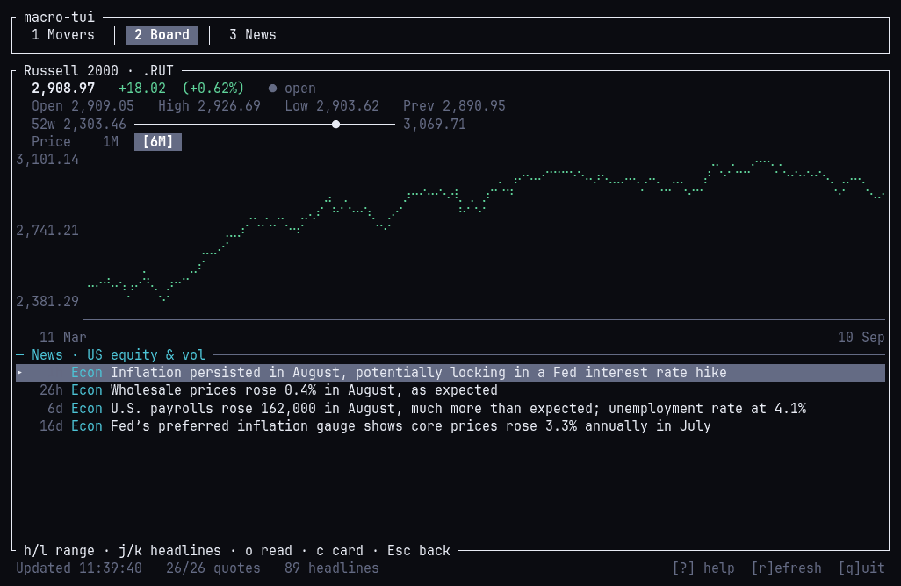
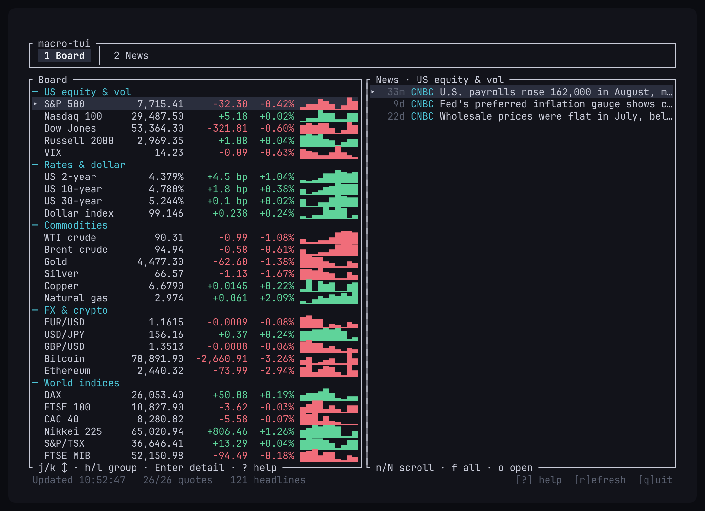
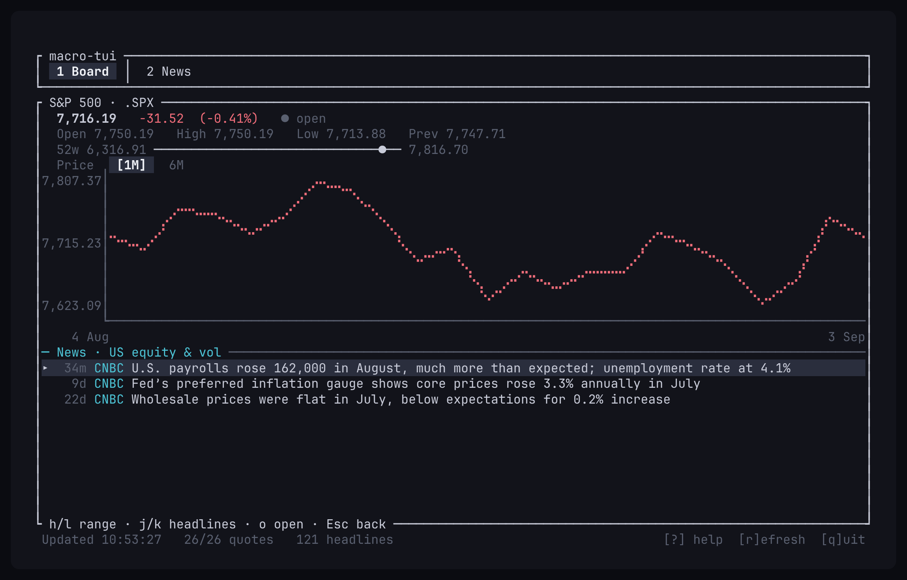
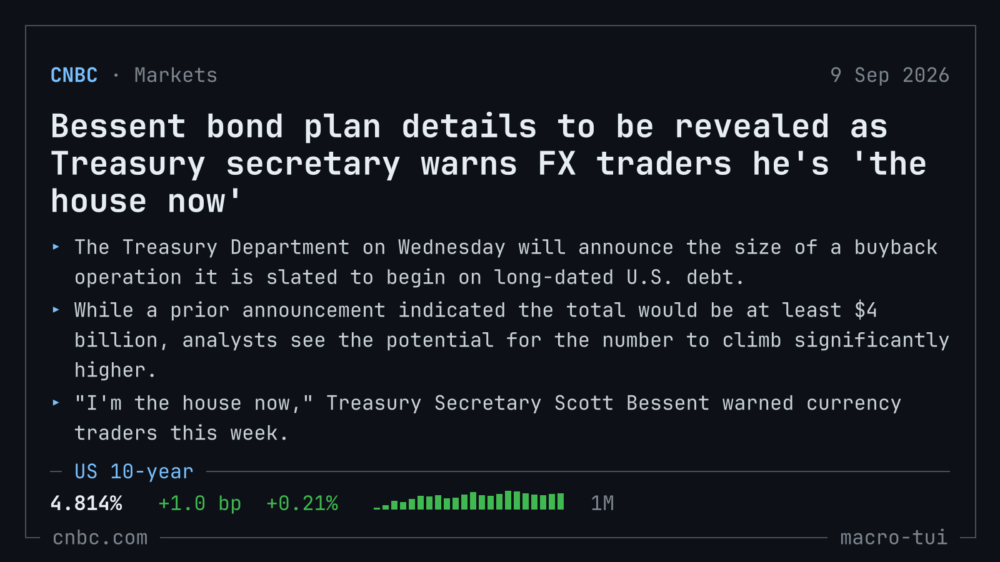

$ macro-tui
Twenty-six macro instruments on one screen — live prices, a month of daily closes, and the headlines moving them. No API key. No signup. It works the moment it starts.
$ macro-tui --install
$ curl -fsSL https://tui.jp305.dev/macro-tui/install.sh | shDrops a single binary in ~/.local/bin. Verifies its checksum. Then run macro-tui.
$ macro-tui # recorded, at speed

Twenty seconds, unedited — the movers, the board, a chart at both ranges, the headlines.
$ macro-tui --show board # fig. 01

fig. 01 — the board. Every row carries a live price, its move, and a month of daily closes.
$ macro-tui --coverage
- us equity + vol
- S&P 500, Nasdaq 100, Dow, Russell 2000, VIX.
- rates + dollar
- 2 / 10 / 30-yr yields in bp, dollar index.
- commodities
- WTI, Brent, gold, silver, copper, nat gas.
- fx + crypto
- EUR/USD, USD/JPY, GBP/USD, BTC, ETH.
- world indices
- DAX, FTSE 100, CAC 40, Nikkei 225, S&P/TSX, FTSE MIB.
- news
- CNBC top / economy / finance, merged + deduped, filtered to the selected row.
oreads the full story in the terminal;ccopies it as a 1600×900 image.
$ macro-tui --show detail # fig. 02

fig. 02 — a chart scaled to the data, not to zero, plus the headlines that mention it.
$ macro-tui --show card # fig. 03

fig. 03 — c copies the story as an image, ready to paste; a copy lands in ~/Pictures/macro-tui/.
$ macro-tui --keys
| key | does |
|---|---|
| j k | move the selection |
| h l | jump group, or switch chart range |
| Enter | open the detail view |
| 1 2 | board, news |
| key | does |
|---|---|
| n N f | scroll and widen the news rail |
| o | read a story, in the terminal |
| c | copy a story as an image, for a post |
| r · ? q | refresh now · help, quit |
$ macro-tui --install --alt
arch, omarchy, any pacman distro
# build and install a real package
git clone https://github.com/jp30566347/tui
cd tui/macro-tui && makepkg -sifrom source
cargo install --git https://github.com/jp30566347/tui macro-tui
download a binary
# pick your platform from the releases page github.com/jp30566347/tui/releases
Static musl builds for x86-64 and ARM Linux, native builds for Intel and Apple silicon Macs. SHA-256 beside every archive. A Windows zip is built too, but never run on Windows — treat as untested.
$ macro-tui --sources
| what | source | refresh |
|---|---|---|
| quotes | CNBC, all 26 in one request | 15 s |
| daily closes | MarketWatch timeseries, all 26 in one request | 15 min |
| headlines | CNBC top news, economy, finance | 5 min |
| stories | the CNBC article page, on open | per session |
Public and keyless — nothing to configure. Renders to stderr, so stdout stays free. Treat prices as indicative, not to trade against.